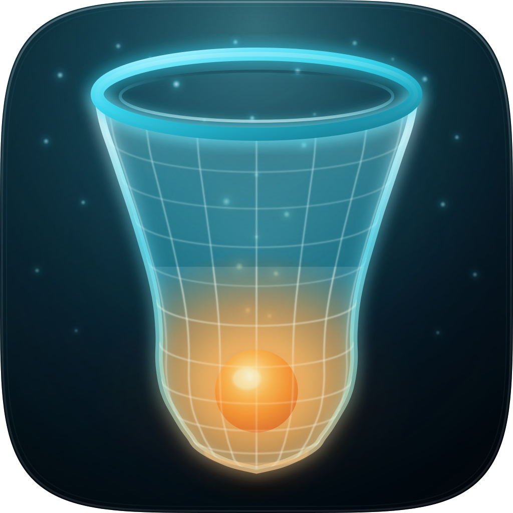
icon.svg. A trawl mouth held open by a lit cyan rim, its mesh wall falling away into a pendulous cod-end, with one amber catch glowing through the net from inside and plankton motes in the water around it.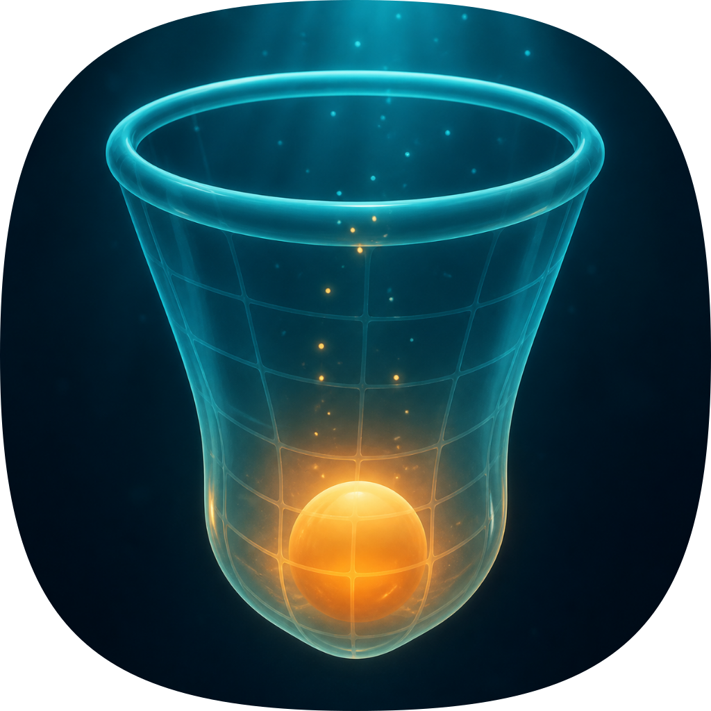
| Take | Renders at 128 / 64 / 48 / 32 / 16 css px (2× retina sources), plus the 16px squint magnified | Rubric | Verdict |
|---|---|---|---|
| A-v2 · icon.svghand-authored layered SVG, C1 material rebuilt in — SHIPS | 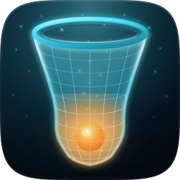 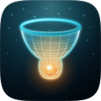 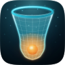 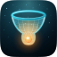 |
11 / 12 | Volumetric gel wall with C1's proportions (aspect 1.31 vs C1's 1.32) and richer amber catch, glow bleeding through the pendulous cod-end. Checks 1–4 pass on real renders — the elongation fixed the old 16px net-vs-lamp ambiguity outright. Sole deduction moved to #2: the 81%-height glyph runs an 86px bottom margin, tighter than the conventional safe zone; the direct cost of the C1 proportion. Layers #bg/#mid/#fg/#highlight intact. |
| A-v1 · icon-v1.svgoriginal hand-authored master | 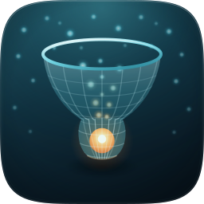 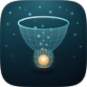 |
11 / 12 | Same geometry, flatter material: gradient wall rather than gel skin, warm halo pooled at the catch. Superseded by v2 on light model, figure-ground and depth coherence (#5, #7, #8) while scoring the same headline number — the rubric can't see material nuance the eye can. |
| C1 · icon-c1.pngGPT-Image raster, corpus-referenced — material winner | 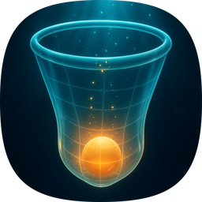 |
9 / 12 | Best raw material of the set: soft volumetric gel, broad glow-through. Fails #10 (variant robustness) by construction — a flat raster has no layers, so macOS tinted/clear variants degrade — and loses a point on optical centring (subject rides low). Its material was rebuilt into A-v2 rather than shipped, per the pipeline rule. |
| C2 · icon-c2.pngGPT-Image raster, diamond mesh | 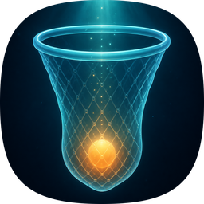 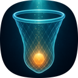 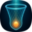 |
8 / 12 | Handsome literal mesh, but the diamond lattice smears to noise at 32 and vanishes at 16 (check #4 marginal on the real render), and the same #10 raster liability applies. Kept as an alternate. |
| B · icon-engineB-arrow.svgArrow 1.1 vector take | 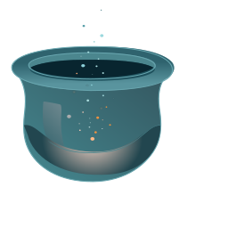 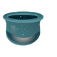 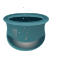 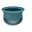 |
6 / 12 | The miss of the set: silhouette reads as a cauldron (#3 fail), catch not held in the net, composition drifts off-centre, no full-bleed artwork. Nothing salvaged beyond the rim ellipse treatment. Kept for the record — a variation set that hides its losers isn't an audit. |
audit-renders/render-manifest.json records all five takes and the whole sheet is machine-checkable — master-v2 from icon.svg and v1 from icon-v1.svg, both of which carry their own clipPath id="squircle" and so need no external mask; c1 and c2 from icon-c1.png and icon-c2.png, which arrive from the image engine already squircle-masked and are recorded as png rather than raster-mask for that reason; and engineB from icon-engineB-arrow.svg, whose 144×167 viewBox is rendered to the square tile as the engine delivered it. The master's 1024 and 256 renders reproduce the shipped icon.png and icon-256.png byte for byte, so the sheet and the delivery are provably the same artifact. Re-rendered 19 Aug 2026 with audit_sheet.py render, which added the 64 and 48 columns and the 1024 hero the sheet had claimed since it was written but never shown, and filled in the 96 and 128 sources that were missing for every take. Every render below 1024 for the master, v1 and the Arrow take came back byte-identical to the ones already on the sheet; the two raster takes moved only in mask-edge resampling (mean absolute channel difference 0.9 of 255 at 256px). No verdict or score changed.